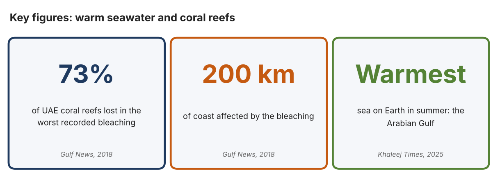
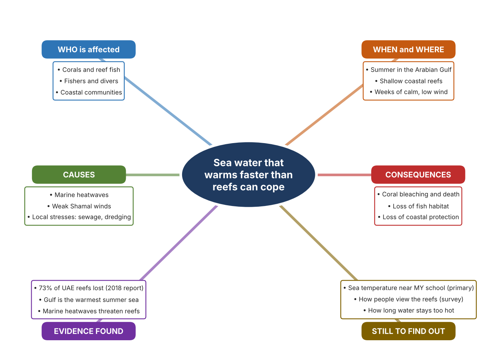
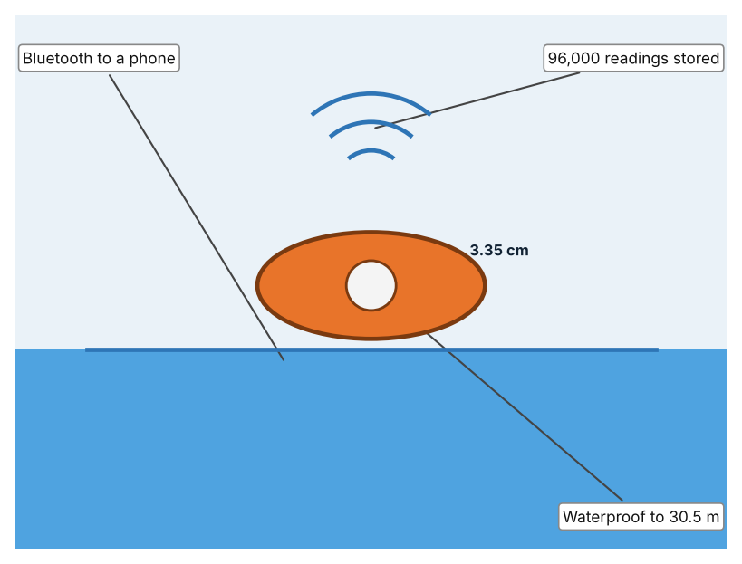
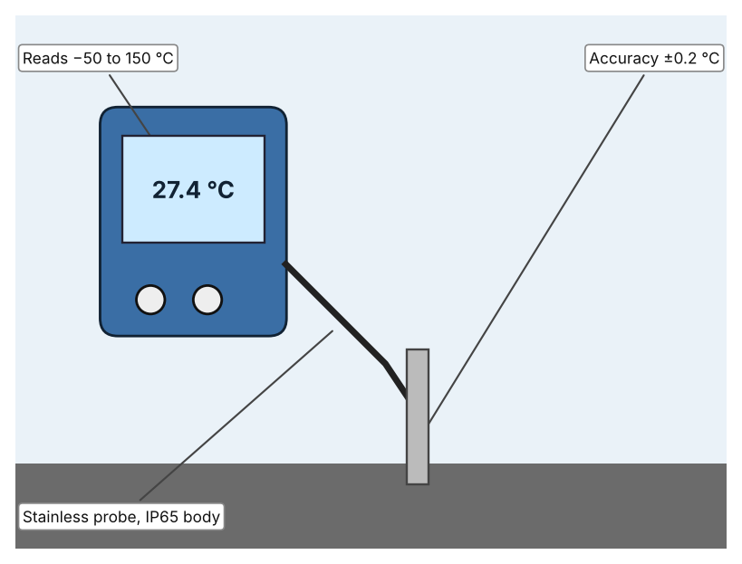
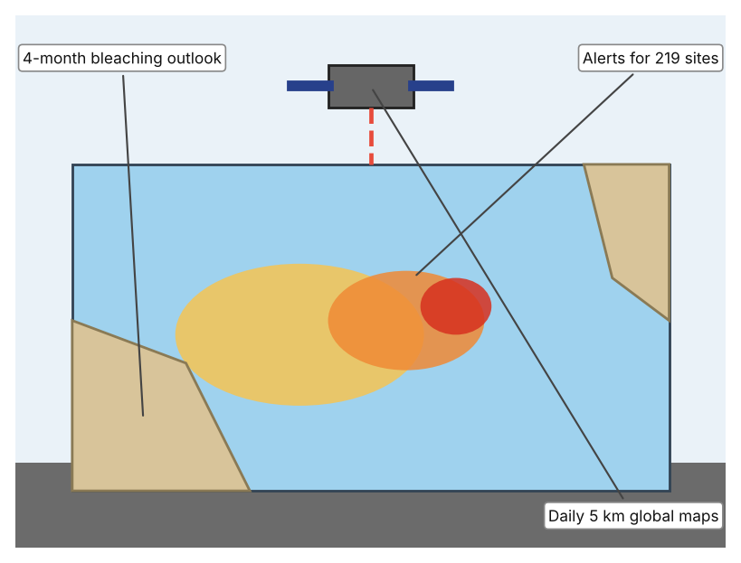

A1 · Design need
Identify and explain the problem faced by your client and community.
My client is the Marine Science Club of a Dubai school, represented by its teacher adviser. The club studies the coast near the school and wants to protect local coral. Its members have heard that warm summer seawater is damaging reefs in the Gulf, and the club needs the temperature of the water to be known and tracked so that warning signs of heat damage can be recognised early.
The people most affected are the corals and the reef animals that depend on them, because they cannot move away from warm water. Fishers and divers are a second group, because reefs support fish and tourism. Coastal communities are a third group, because reefs help to protect shorelines and are part of the UAE's natural heritage.
The need is real because the loss has already been large. Gulf News reported that more than 73% of the UAE's coral reefs were lost to the worst recorded bleaching, an event that followed over five weeks of low wind, with bleaching stretching about 200 km (Kumar). Khaleej Times reports that the Arabian Gulf is the warmest sea on Earth in summer, and that marine heatwaves occur when the Shamal winds weaken (Sircar). The first report is from 2018 and neither article gives temperature readings, so I need to measure the water near my school myself.
Figure 1 summarises the key numbers. The 2018 article is old and describes the whole UAE coast, so I treat it as a pattern and not as the state of one reef today. In my own words: coral cannot run away from heat, so people have to notice it for them. Figure 2 is my mind map of the problem.
281 words


A2 · Research plan
Six research questions of different types, each with a priority, a research type and evidence.
| # | Question | Priority | Primary / secondary | Evidence | Brief answer |
|---|---|---|---|---|---|
| 1 | Factual: How much of the UAE's coral was lost in the worst recorded bleaching, and what led to it? | High | Secondary | Gulf News, 29 Oct. 2018 (Appendix A, Source 1) | More than 73% of reefs were lost; over five weeks of low wind and rising temperatures in almost every year of the previous decade contributed; local stresses added to it. |
| 2 | Factual: Why is the Arabian Gulf so hot in summer, and what does that threaten? | High | Secondary | Khaleej Times, 29 Dec. 2025 (Appendix A, Source 2) | It is the warmest sea on Earth in summer; marine heatwaves occur when Shamal winds weaken and the monsoon strengthens, threatening reefs and fisheries. |
| 3 | Conceptual: How is water temperature measured, and how can heat stress on coral be tracked from space? | Medium | Secondary | HOBO page (Source 3); NOAA page (Source 5) | A waterproof logger records temperature at intervals; satellites compute sea-surface temperature, hot spots and degree heating weeks every day on a 5 km grid. |
| 4 | Debatable: Should reef heat be tracked by a logger in the water, by a hand probe, or by satellite data? | Medium | Secondary | Appendix A, Sources 3, 4 and 5 | Loggers record all day at one spot; a hand probe is cheap but gives only a moment; satellites cover wide areas but at 5 km resolution. My view: local readings matter for one reef. |
| 5 | Debatable (challenges my assumption, UAE source): Coral reefs are far from schools, so is this really a problem for a school community? | High | Secondary | Gulf News, 2018 (Source 1); Khaleej Times, 2025 (Source 2) | The loss spans about 200 km of coast, and the same heat affects fisheries. It is a coastal problem that reaches fish, food and tourism, but I need local readings to see how it applies near my school. |
| 6 | Factual (primary): What is the temperature of the sea water or of a school pool or tank at different times of day, and how do people feel about the reef? | High | Primary | Own temperature log and survey (Appendix A, Sources 6 and 7) | [Student data needed: write the temperature readings (with date, time and place) and survey averages, then two sentences on the pattern you see.] |
A3 · Existing products
Three significantly different products, each analysed with ACCESS FM, with pros and cons.
Product 1: Pendant water-temperature logger (HOBO MX2201)

Illustration by the author based on the HOBO MX2201 page, RS Hydro (Appendix A, Source 3). [Student: replace with a photo from the source, cited MLA 9]
Product 2: Hand-held probe thermometer (Hanna Checktemp HI98501)

Illustration by the author based on “HI98501,” Poly (Appendix A, Source 4). [Student: replace with a photo from the source, cited MLA 9]
Product 3: Satellite heat-stress maps (NOAA Coral Reef Watch)

Illustration by the author based on “Coral Reef Watch Products,” NOAA (Appendix A, Source 5). [Student: replace with a photo from the source, cited MLA 9]
ACCESS FM analysis
| ACCESS FM | Product 1 | Product 2 | Product 3 |
|---|---|---|---|
| Aesthetics | Small pendant logger, 3.35 × 5.64 × 1.8 cm; looks are not described (RS Hydro). | Hand-held thermometer with a stainless probe; styling is not described (Poly). | Online maps and charts; design is not described (NOAA). |
| Cost | Price not listed (RS Hydro). | Price on request (Poly). | Cost terms are not stated (NOAA). |
| Customer | Scientists and monitoring teams who need a record in the water. | Anyone who needs a spot reading, such as a technician. | Reef managers and the public who need regional heat warnings. |
| Environment | CR2032 battery lasts about 1 year with Bluetooth on and 2 years with it off. | CR2032 battery; the page gives about 2,000 hours (and elsewhere 3,000 hours). | No device needed; satellite data are shared online. |
| Size | 12.75 g. | Body 70.4 × 50.5 × 22 mm and 51.3 g; probe 106 mm long. | Data cover the whole globe. |
| Safety | Waterproof to 30.5 m; low-voltage coin battery. | IP65 body; immersion rating not stated. | No physical risk. |
| Function | Records ±0.5 °C (resolution 0.04 °C) in water from −20 to 50 °C and sends data by Bluetooth LE. | Reads −50 to 150 °C with ±0.2 °C accuracy (−30 to 120 °C). | Maps of sea-surface temperature, anomaly and degree heating weeks every day; email alerts for 219 virtual stations. |
| Materials | Materials are not stated. | Stainless steel probe (Poly). | Not applicable. |
Pros and cons
| Product 1 | Product 2 | Product 3 | |
|---|---|---|---|
| Pro | Records day and night for a year or more and is waterproof. | Cheap, quick and accurate for a spot check. | Covers every reef in the world and gives warnings. |
| Con | Needs a phone or computer to read the data and only measures one place. | Gives one reading at one moment, so rises at night can be missed. | Resolution is 5 km, so it cannot show one small reef or tank. |
A4 · Design brief
Restate the need, summarise the research and the existing products, and state the design intent.
My client, the Marine Science Club of a Dubai school, needs the temperature of coastal water to be known and tracked so that heat damage to coral can be spotted early. The problem is serious: more than 73% of the UAE's coral reefs were lost in the worst recorded bleaching, which stretched about 200 km (Appendix A, Source 1). The Gulf is the warmest sea on Earth in summer, and marine heatwaves threaten reefs and fisheries (Appendix A, Source 2).
My research shows that heat stress builds when calm, hot weather lasts for weeks, so a single reading is not enough (Appendix A, Sources 1 and 2). Neither news article gives temperature readings, so I need my own evidence. My debatable questions led me to decide that loggers, probes and satellites each cover only part of the problem, and my challenged assumption (that reefs are too far from a school to matter) showed me that the issue touches fish, food and coastal life. I will gather my own evidence with the temperature log and the survey, always with permission (Appendix A, Sources 6 and 7).
I analysed three very different existing solutions. A pendant logger records temperature in water for up to two years on a coin battery, but it measures only one spot and needs a phone to read the data (Appendix A, Source 3). A hand-held probe is accurate to ±0.2 °C and cheap to use, but it gives only a single moment (Appendix A, Source 4). Satellite heat-stress maps cover the globe daily, but at 5 km resolution they cannot show one small reef (Appendix A, Source 5). They give me three ideas for inspiration: continuous recording, quick checks, and wide-area warnings. Each has a weakness that another covers.
My design intent is therefore to create a solution that measures water temperature at a chosen place over time and shows when it becomes unsafe for marine life. It must be affordable for a school, simple to read, waterproof and safe to handle. I have deliberately not fixed what form it will take. That decision will be made in Criterion B, after I analyse my own log and survey against the evidence in Appendix A.
367 words
Appendix A · Research notes and sources
Secondary sources in MLA 9, with notes and where each source is used.
| # | Source (MLA 9) | Key notes | Used in |
|---|---|---|---|
| 1 | Kumar, Anjana. “Worst-Recorded Bleaching Wipes out 73 per Cent of UAE's Coral Reefs.” Gulf News, 29 Oct. 2018, gulfnews.com/amp/story/uae%2Fweather%2Fworst-recorded-bleaching-wipes-out-73-per-cent-of-uaes-coral-reefs-1.2295261. Accessed 21 Oct. 2026. | More than 73% of reefs lost (NYU Abu Dhabi with the Emirates Environmental Agency); over five weeks of low wind; temperatures rose almost every year; local stresses; bleaching stretched about 200 km. Source is from 2018. | A1; A2 Q1 and Q5; A4. |
| 2 | Sircar, Nandini. “UAE Scientists Discover Cause of Extreme Summer Heat in Arabian Gulf.” Khaleej Times, 29 Dec. 2025, www.khaleejtimes.com/uae/environment/uae-research-extreme-heat-arabian-gulf. Accessed 21 Oct. 2026. | Gulf is the warmest sea on Earth in summer; marine heatwaves when Shamal winds weaken and the monsoon strengthens; threatens reefs and fisheries; no temperature readings given. | A1; A2 Q2 and Q5; A4. |
| 3 | “HOBO MX2201 Pendant Temperature Data Logger.” RS Hydro, rshydro.co.uk/water-quality-monitoring-equipment/water-quality-monitoring-parameters/measuring-water-temperature/mx2201/. Accessed 21 Oct. 2026. | ±0.5 °C, 0.04 °C resolution; in water −20 to 50 °C; CR2032 1 year (Bluetooth on) or 2 years (off); 96,000 readings; waterproof to 30.5 m; 3.35 × 5.64 × 1.8 cm; 12.75 g; price not listed. | A2 Q3 and Q4; A3 Product 1; A4. |
| 4 | “HI98501.” Poly, poly.my/product/hi98501/. Accessed 21 Oct. 2026. | −50 to 150 °C; ±0.2 °C (−30 to 120 °C); IP65; CR2032, about 2,000 h; probe 106 mm; body 70.4 × 50.5 × 22 mm, 51.3 g; price on request. | A2 Q4; A3 Product 2; A4. |
| 5 | “Coral Reef Watch Products.” NOAA, updated 15 Sept. 2023, coralreefwatch.noaa.gov/product. Accessed 21 Oct. 2026. | Daily global 5 km heat-stress products (SST, anomaly, HotSpot, Degree Heating Week); virtual stations with email alerts (219 sites); 4-month bleaching outlook; cost terms not stated. | A2 Q3 and Q4; A3 Product 3; A4. |
| 6 | Primary: water temperature log, completed by the student on [date]. Accessed own data. | [Student: summarise your counts.] | A2 primary question; A4. |
| 7 | Primary: survey of [number] people, completed on [date]. | [Student: summarise your averages.] | A2 primary question; A4. |
Primary research instrument 1: water temperature log
Student measures temperature of seawater, a pool or a tank at set times, with permission and a teacher present.
| Place | Date and time | Water temp (°C) | Air temp (°C) | Depth (cm) | Notes |
|---|---|---|---|---|---|
| Morning | |||||
| Midday | |||||
| Afternoon | |||||
| Evening |
Primary research instrument 2: survey
Rate each statement from 1 (strongly disagree) to 5 (strongly agree). Collect responses with permission and record no names.
| Statement | 1 | 2 | 3 | 4 | 5 | Total responses |
|---|---|---|---|---|---|---|
| I know that warm sea water can harm coral. | ||||||
| I have seen coral or reefs near the UAE coast. | ||||||
| It is important to measure sea temperature near us. | ||||||
| I would be interested in a warning when water becomes too hot. |